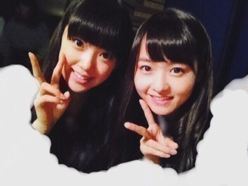
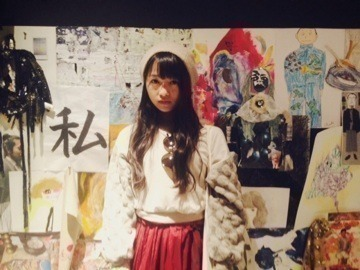
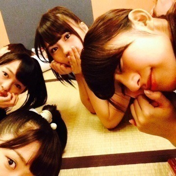

| 2013/10 15 Tue | 異色なおふたり。506 回目 |

みおなお誕生日おめでとう17歳！
写真は今日ですが衣装はひみつ！
さて、帰ろう！
と思ったら大雨...うわー
明日も激しい台風がくる。
みなさん気をつけてください。
昨日のはなし

絶命展に行ってきました！
なんか、ほんと、意味わかんないの。
全然意味わかんない。
でも、すごいすきだと思った。
全然説明できないけど
この作品はどういう意味なんだろう
って考える時間が楽しかった。
見て、何を思うか感じ取るかは
人それぞれ。
絶命Tシャツ、絶命缶バッジ
買っちゃったー

おほほ

前回のブログ、、
まだ完成してないんだよね...
送ったつもりなかったのに
公式見たら更新されてて
ファッッッ
ってなりました。
ぼけぼけです。
中途半端な内容ですみません
ガールズルール最後の個握
来てくださったみなさん
ありがとうございました！！
ガールズルールの期間、
いろんなことがあったなあ。
プリンシパルとか、
ドラマとかライブとか
いろんな感想きけたなー
長くお話をいっぱいできました。
みなさんの気持ちとか思いとか
すごく伝わりました。
やっぱりみなさんがいないと
だめだなーって感じます。
みなさんが私を支えてくださる分
もっと返したいです。
みなさんにも喜んでもらいたいし、
たくさんの方に私のこと知ってほしい。
自分なりに頑張るし、
応援しててほしい。
ありがとうございました！
次は7thの握手会

まりか川後まいまいれいか

畳は落ち着きますなあ
海の上の診療所1話
見ましたか？
見たとき不思議な感覚でした。
大学生になりきれてたのか...
いつか大きく出演できたらいいなあ
まりか
コメント(427)
2013/10/15 23:12